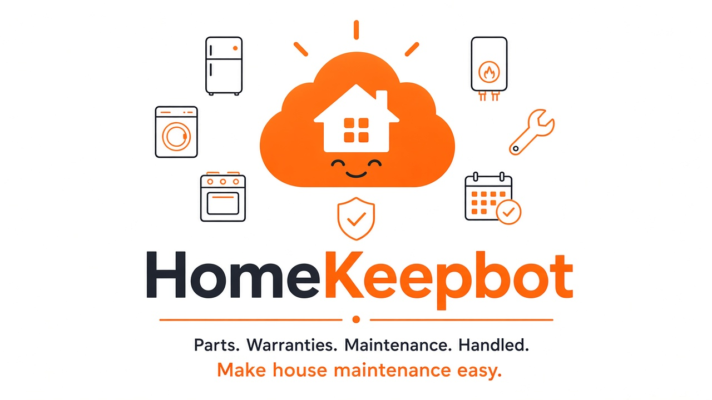

A growing family of free Grok Bot templates that handle the busywork, from your virtual business card to your household plans and your home's upkeep. Pick one, make it yours in minutes, and stay in charge of every step.
Duobot helps couples and households communicate better with a shared Google Calendar and a shared Trello board, so you both see the same plan without relaying everything.
A shared "honey-duo" Trello board with a list for every part of life together
Groceries, bills, gifts, date nights, and vacations, all in one place
Quick capture: say it in a sentence and Duobot files it
Friendly heads-ups before a bill is due or a special date arrives
A weekly check-in so you both know what's coming up
Drafts for your approval, no auto-pay, and it never books without your okay
On a computer? Scan with your phone's camera to open the Duobot template on your phone.

HomeKeepbot
Parts. Warranties. Maintenance. Handled.
Make house maintenance easy. HomeKeepbot builds a Page that tracks every appliance in your home, reminds you about upkeep based on each model's warranty and manual, and orders the exact parts once you approve.
Snap a photo of the model plate to log brand, model, and serial
One Page for appliance info, official manuals, and parts
Warranty tracking with end dates and expiring-soon flags
Maintenance reminders from each model's manual and warranty
Finds the exact replacement part and compares sellers on price, stock, and returns; orders only after you approve
Logs paint colors, home materials, and filter and bulb sizes from a photo or voice note
We keep it simple. This site doesn't use analytics or advertising cookies, and we don't sell your information. The only thing we save is a small setting on your device that remembers your choice. Fonts load from Google Fonts, and the Duobot demo video comes from duobotsi.com. You can change your choice anytime from Cookie settings in the footer. Learn more
Cookie settings
EssentialRemembers your cookie choice on this device. Always on.
AnalyticsNot used. This site doesn't count or track visits.
AdvertisingNot used. No ad cookies, ever.
Third-party content (Google Fonts and the duobotsi.com demo video) is explained in the cookie notice.
Cookie notice
What we save. One small setting in your browser's local storage that remembers your choice on this notice. We don't set any other cookies.
No analytics or ads. This site doesn't count visits, track you, or show ads. Accept or Decline, the site works the same.
Third parties. To show the page, your browser loads fonts from Google Fonts, and the Duobot demo video and its preview image from duobotsi.com. Those services receive standard technical information such as your IP address and browser type. Our web host may also keep standard server logs. If you follow links to Grok Bot, X, duobotsi.com, or other sites, those sites have their own cookie and privacy policies.
Your choices. You can change your choice anytime from Cookie settings in the footer, or clear this site's data in your browser.